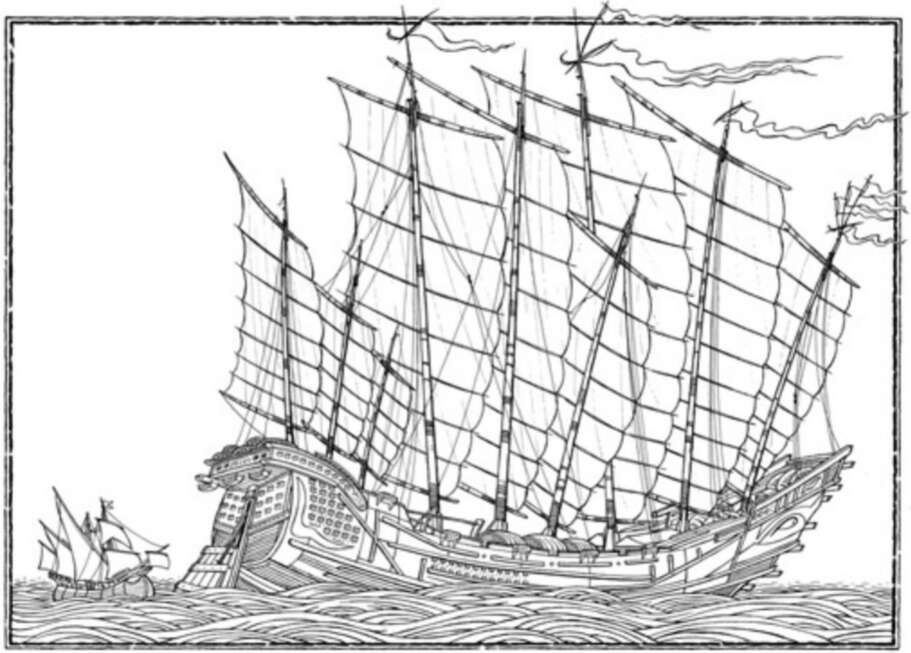

that early modern Europeans caught a fever that drove them to sail to distant and completely unknown lands full of alien cultures, take one step on to their beaches, and immediately declare, ‘I claim all these territories for my king!’ 38. Zheng He’s flagship next to that of Columbus. Invasion from Outer Space Around 1517, Spanish colonists in the Caribbean islands began to hear vague rumours about a powerful empire somewhere in the centre of the Mexican mainland. A mere four years later, the Aztec capital was a smouldering ruin, the Aztec Empire was a thing of the past, and Hernan Cortés lorded over a vast new Spanish Empire in Mexico. The Spaniards did not stop to congratulate themselves or even to catch their breath. They immediately commenced explore-and-conquer operations in all directions. The previous rulers of Central America — the Aztecs, the Toltecs, the Maya — barely knew South America existed, and never made any attempt to subjugate it, over the course of 2,000 years.
